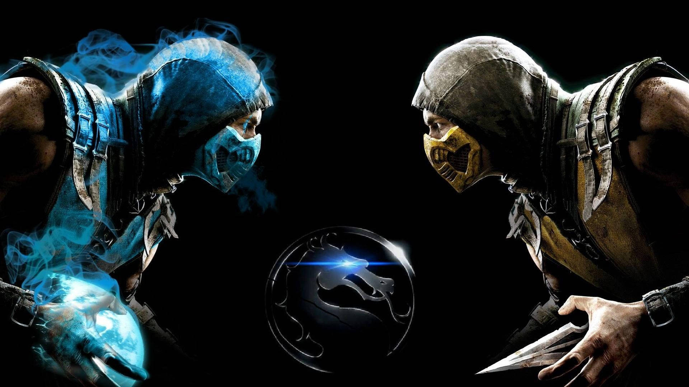

Mortal Kombat 11: La Evolución de la Saga y la Lucha Definitiva
La Historia Detrás de Mortal Kombat

*Mortal Kombat* nació en 1992 como un juego de lucha creado por los desarrolladores Ed Boon y John Tobias. Su concepto innovador, centrado en batallas sangrientas y violentas, rápidamente capturó la atención de los jugadores. A pesar de las controversias generadas por su alto nivel de violencia, *Mortal Kombat* se convirtió en un fenómeno cultural, destacándose no solo por su jugabilidad, sino también por sus icónicos "fatalities", movimientos especiales que definieron la saga.
El primer *Mortal Kombat* fue lanzado como una máquina recreativa, pero su éxito no tardó en llevarlo a otras plataformas. Con cada nuevo juego de la serie, se introdujeron nuevos personajes, historias más complejas y mecánicas de lucha que desafiaban las convenciones del género. El enfoque en los combates 2D y los movimientos especiales complejos hizo que el título se destacara frente a otros juegos de lucha populares de la época.
*Mortal Kombat* no solo marcó un antes y un después en el mundo de los videojuegos, sino que también dejó una huella indeleble en la cultura pop. La franquicia inspiró películas, series de televisión, cómics y, por supuesto, una gran cantidad de secuelas y adaptaciones. A pesar de las críticas que recibió a lo largo de los años por su violencia explícita, *Mortal Kombat* ayudó a cambiar la forma en que se percibían los videojuegos y su potencial para contar historias y generar experiencias inmersivas.
El Legado de Mortal Kombat en la Industria de los Videojuegos
El componente multijugador de *Mortal Kombat* también fue fundamental para su éxito. La posibilidad de enfrentar a otros jugadores, ya sea localmente o en línea, añadió una dimensión competitiva que mantuvo a los jugadores enganchados durante años. Esto le permitió mantenerse relevante en un mercado de videojuegos altamente competitivo, y su comunidad de jugadores ha seguido creciendo con cada entrega de la saga.
Uno de los aspectos más importantes de *Mortal Kombat* es su elenco de personajes, muchos de los cuales se han convertido en verdaderos iconos dentro de los videojuegos. Figuras como Scorpion, Sub-Zero, Raiden, Liu Kang y Johnny Cage son solo algunos de los nombres que los fanáticos del juego han llegado a adorar. Estos personajes han evolucionado a lo largo de los años, con nuevas historias y diseños que han mantenido su relevancia en la industria.
El desarrollo técnico de *Mortal Kombat* también es notable. Con el tiempo, la serie ha adoptado nuevas tecnologías, pasando de gráficos en 2D en los primeros títulos a los impresionantes gráficos en 3D y la captura de movimientos utilizada en las entregas más recientes. Estos avances no solo han mejorado la jugabilidad, sino que también han permitido que los "fatalities" y los combates sean más espectaculares y realistas que nunca.